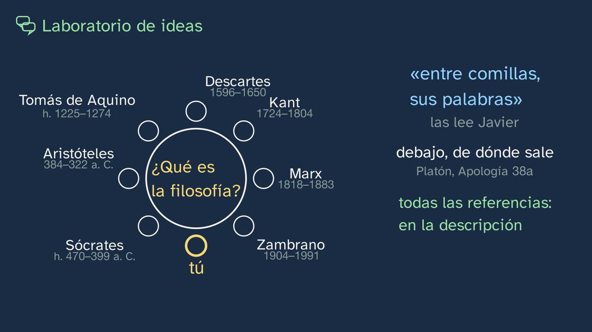
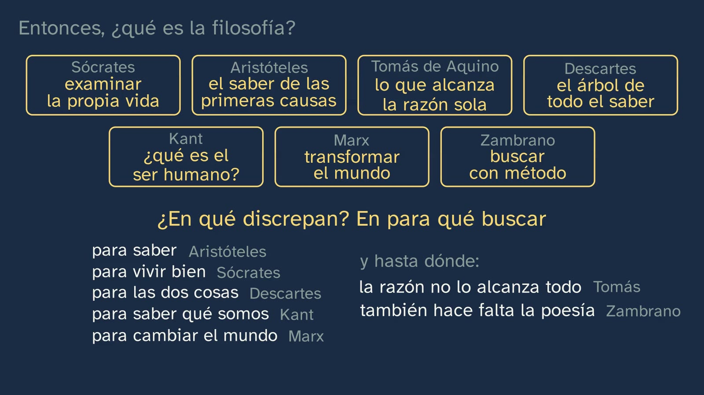

¿Qué es la filosofía? Filósofos a la mesa
En pocas palabras
Es el primer laboratorio de ideas del curso: en Filosofía el laboratorio es el diálogo, sin bata. Siete filósofos de épocas distintas se sientan a una mesa imaginaria y responden, cada uno con sus palabras, a la pregunta del título: ¿qué es la filosofía?
- Sócrates: examinar la propia vida.
- Aristóteles: buscar el saber de las primeras causas, por saber.
- Tomás de Aquino: lo que alcanza la razón humana por sí sola.
- Descartes: el árbol de todo el saber, cuyo fruto es vivir bien.
- Kant: cuatro preguntas que van a parar a una, ¿qué es el ser humano?
- Marx: no quedarse en interpretar el mundo, sino ayudar a transformarlo.
- María Zambrano: una búsqueda con método, que no lo es todo sin la poesía.
La clase saca lo que comparten (una búsqueda, con razones, de lo más hondo: los cuatro rasgos de la clase 1) y en qué discrepan (para qué buscar, y hasta dónde). Desmonta el error de creer que, si no se ponen de acuerdo, es pura opinión. Abre una ventana fuera de Europa (Confucio, Buda y Al-Kindi) y termina con lo más importante: cada respuesta de la mesa se convierte en una pregunta íntima para el alumno. Al final, la octava silla es la suya.
Objetivo. Al terminar, el alumnado sabrá decir qué es la filosofía para siete grandes filósofos, con sus palabras, qué tienen en común, en qué discrepan, y cuál le convence más y por qué.
Currículo
Real Decreto 243/2022, Filosofía (texto consolidado del BOE, comprobado el 03/10/2026). Los saberes son del bloque A, «La filosofía y el ser humano», apartado 1.
| Elemento | Qué dice el decreto | Dónde se trabaja |
|---|---|---|
| Saber básico (bloque A.1) | «Características y concepciones del saber filosófico.» | Las siete concepciones, cada una con su autor y su cita; lo que comparten (los cuatro rasgos) y en qué discrepan |
| Saber básico (bloque A.1) | Del mismo apartado: «[…] el pensamiento y el diálogo argumentativos; […]» | La octava silla: una postura con su razón, una objeción y su respuesta |
| Competencia específica 4 | «Practicar el ejercicio del diálogo filosófico de manera rigurosa, crítica, tolerante y empática […]» | La mesa, y la controversia estructurada de la actividad |
| Competencia específica 5 | «Reconocer el carácter plural de las concepciones, ideas y argumentos en torno a cada uno de los problemas fundamentales de la filosofía […] para generar una concepción compleja y no dogmática […]» | Lo que comparten y en qué discrepan; el error típico: que discrepen no la vuelve pura opinión |
| Competencia específica 6 | «Comprender las principales ideas y teorías filosóficas de los más importantes pensadores y pensadoras […] para generar una concepción rigurosa y personal de lo que significa la filosofía […]» | Siete pensadores y pensadoras, y las siete preguntas para el alumno |
| Criterio 4.1 | «Promover el contraste e intercambio de ideas […] a través de la participación en actividades grupales y el ejercicio del diálogo racional […]» | La actividad |
| Criterio 5.1 | «Generar una concepción compleja y no dogmática de los problemas filosóficos mediante el análisis crítico de tesis filosóficas distintas y opuestas […]» | La primera discusión (¿vivir o saber?) y la síntesis |
| Criterio 5.2 | «Comprender y exponer distintas tesis y teorías filosóficas como momentos de un proceso dinámico y siempre abierto de reflexión y diálogo […]» | Descartes junta a los dos griegos; Tomás lee a Aristóteles con Averroes |
| Criterio 6.2 | «Adquirir y demostrar un conocimiento significativo de las ideas y teorías filosóficas de algunos de los más importantes pensadores y pensadoras de la historia […]» | Los siete, con su época y su obra |
Lo que hay que traer: la clase 1 del tema (los cuatro rasgos, Sócrates y la vida sin examen, Aristóteles y el saber que no fabrica nada, y la diferencia entre tener una opinión y defender una postura).
Cómo está construida la clase
Capítulos del vídeo
Unos veinte minutos (19:57), en 17 capítulos. El decreto pide que esta materia sea «en buena medida dialógica» y una «experiencia real de descubrimiento», no una exposición (introducción de la materia). Por eso la clase no da una definición: deja que la den siete, saca lo común, y devuelve la pregunta al alumno.
| Capítulo | Qué pasa | Por qué así |
|---|---|---|
| Qué vamos a ver (0:00) | Javier saluda; el mapa del tema, con la clase de hoy resaltada. Gancho: siete filósofos, una pregunta, y no van a contestar lo mismo. | Saber dónde se está y crear la expectativa de un desacuerdo. |
| Lo que ya sabes (0:26) | Los cuatro rasgos de la clase 1. | Recuperar lo que la síntesis va a usar. |
| Las soluciones de la clase anterior (0:56) | Las cuatro, en corto. | Práctica espaciada. |
| Siete filósofos a la mesa (2:17) | La mesa es imaginaria y se dice; las citas las lee Javier; las referencias, en la descripción. | Honestidad: no es un debate simulado. |
| Sócrates (2:50) | No escribió nada; la plaza; el tábano (Apología 30e); «lo que no sé, tampoco creo saberlo» (21d); «una vida sin examen no merece la pena vivirla» (38a). | El padre de la filosofía, con su escena. |
| Aristóteles (4:16) | «Todos los seres humanos desean por naturaleza saber» (Metafísica I 1, 980a21); el saber de las primeras causas (982b9–10). La primera discusión: ¿vivir o saber? | Dos griegos, dos acentos. |
| Tomás de Aquino (5:25) | Fe y razón: las disciplinas filosóficas, «que se investigan con la razón humana» (Suma teológica I, q. 1, a. 1); «la gracia no suprime la naturaleza, sino que la perfecciona» (a. 8, ad 2); Averroes, «el Comentador». | La Edad Media, con su frontera y su puente. |
| El árbol de Descartes (7:07) | Predicción; el árbol (carta-prefacio de los Principios, 1647): raíces, tronco, ramas y frutos. | Una animación que se entiende sin la voz. |
| Las cuatro preguntas de Kant (8:51) | La filosofía cosmopolita y las cuatro preguntas (Lógica, Ak. IX, 25); para y piensa: ¿por qué van a parar a la cuarta? | El mapa de toda la filosofía en cuatro líneas. |
| Marx (10:13) | Tesis XI, en el manuscrito de 1845: la clave es el «sólo». | Su mejor argumento, sin partidismo (artículo 9 de la Constitución del canal). |
| Zambrano (10:54) | Filosofía y poesía, «dos mitades del hombre»: la filosofía busca con método; la poesía encuentra. | Una pensadora española del exilio. |
| Entonces, ¿qué es la filosofía? (11:44) | Lo que comparten (los cuatro rasgos) y en qué discrepan (para qué buscar, y hasta dónde). | La respuesta de la clase, presentada como su lectura (artículo 10). |
| ¿Y si no se ponen de acuerdo? (12:58) | El error típico, desmontado: comparten lo esencial y dan razones; y qué es la filosofía, como qué es la física, es una pregunta filosófica. | El error que la propia mesa podría provocar. |
| Más allá de nuestra mesa (13:41) | Confucio (Analectas 2.17), Buda (Kalama Sutta, AN 3.65) y Al-Kindi (Sobre la filosofía primera, sección 1). | Una ventana, no un asiento: la clase 3 recorre otras tradiciones. |
| Siete preguntas para ti (15:02) | Cada respuesta se vuelve una pregunta íntima, con silencio para pensar. «Elige la que más te haya incomodado: esa es tu pregunta.» | Lo más importante de la clase: la filosofía desde dentro. |
| La octava silla (17:17) | La postura del alumno, con un ejemplo inventado de razón, objeción y respuesta. Javier no dice con quién se sienta. | La postura propia. |
| Para practicar y seguir pensando (18:12) | Recapitulación, tres ejercicios y la pregunta abierta. | Las soluciones abren la clase 3. |

Plan de una sesión de 50 minutos
| Minutos | Qué se hace |
|---|---|
| 0–3 | Sin vídeo: cada cual escribe en una frase qué es la filosofía (está en la hoja). |
| 3–14 | Vídeo de 0:00 a 10:13: de la mesa a Kant. Parar en la predicción del árbol (7:10) y en el «para y piensa» de Kant (9:41). |
| 14–21 | Vídeo de 10:13 a 13:41: Marx, Zambrano, la síntesis y el error típico. |
| 21–28 | Vídeo de 13:41 a 17:17: la apertura y las siete preguntas. Dejar que cada cual subraye en la hoja la pregunta que más le haya incomodado. |
| 28–44 | La actividad: controversia estructurada. |
| 44–50 | Vídeo de 17:17 al final: la octava silla. Cada cual relee su frase del principio y escribe su silla. Los ejercicios, para casa. |
Errores típicos y cómo se tratan
- «Si ni los filósofos se ponen de acuerdo en qué es la filosofía, es pura opinión.» Es el error de la clase (12:58). Comparten lo esencial (crítica, radical, racional y de conjunto) y cada uno da razones que se pueden discutir. Y la pregunta por lo que es un saber (qué es la física, qué es la filosofía) no se responde con los métodos de ese saber: es filosófica. Discutirla es parte del trabajo de la filosofía; la competencia 5 del decreto lo dice así: el desacuerdo es «una propiedad intrínseca del pensamiento filosófico».
- «Sócrates dijo: sólo sé que no sé nada.» Ya se vio en la clase 1: la fórmula no está en Platón. Lo que dice su Sócrates es «lo que no sé, tampoco creo saberlo» (Apología 21d), y en otros pasajes dice saber algunas cosas.
- «Tomás conoció a Aristóteles por los árabes.» Lo leyó en latín, casi siempre traducido directamente del griego; de Averroes, al que llamaba «el Comentador», tomó los comentarios.
- «Marx dijo que basta de pensar y hay que actuar.» La clave de la tesis XI es el «sólo»: critica quedarse en interpretar, no el pensamiento.
- «Filosofía es aprenderse lo que dijeron los filósofos.» Con siete nombres en la pizarra conviene decirlo: la clase termina convirtiendo cada respuesta en una pregunta para el alumno. Kant lo escribió así: no se puede aprender filosofía, sólo a filosofar (Crítica de la razón pura, A837–838/B865–866).
Preguntas y soluciones
Dentro del vídeo
- ¿Cuáles eran los cuatro rasgos de la filosofía? (0:26) Crítica (no acepta algo sólo porque lo diga mucha gente), radical (va a la raíz), racional (da razones) y de conjunto (mira el todo).
- Predicción: si toda la filosofía fuera un árbol, ¿qué habría en las raíces y qué frutos daría? (7:10) Valen las respuestas razonadas. Descartes: raíces, la metafísica (los primeros principios); tronco, la física; ramas, la medicina, la mecánica y la moral, y los frutos se cogen en las puntas de las ramas, sobre todo en la moral.
- Para y piensa: ¿por qué las tres primeras preguntas de Kant van a parar a la cuarta? (9:41) Porque lo que puedo saber, lo que debo hacer y lo que me cabe esperar dependen de qué clase de ser soy.
- Las siete preguntas (15:02) no tienen solución: son para pensarlas. En el aula se pueden usar para el diario filosófico o para elegir una y escribir una página.
De la hoja del alumnado
- ¿Con qué se comparó Sócrates y por qué? Con un tábano sobre un caballo grande y noble pero lento, que necesita que lo despierten (Apología 30e): su papel era despertar a la ciudad con preguntas.
- ¿Qué distingue Tomás al empezar la Suma teológica? Dos saberes: la teología, que parte de lo que Dios revela, y las disciplinas filosóficas, que se investigan con la razón humana.
- ¿Qué hay en cada parte del árbol de Descartes? Raíces: metafísica; tronco: física; ramas: medicina, mecánica y moral; los frutos, en las ramas.
- ¿Qué palabra es la clave de la frase de Marx? «Sólo»: no dice que interpretar sea inútil, sino que no basta.
- ¿En qué se diferencian filosofía y poesía, según Zambrano? La filosofía busca, con método; la poesía encuentra, «hallazgo por gracia». Son dos mitades.
- ¿Qué tienen en común Confucio y Sócrates? Los dos ponen la sabiduría en reconocer lo que no se sabe. No pudieron conocerse: según las fechas tradicionales, Confucio murió unos diez años antes de que naciera Sócrates.

Para practicar (las soluciones abren la clase 3)
- Elige dos de la mesa que choquen: ¿qué le diría uno al otro? Vale cualquier pareja con un argumento de cada lado. Ejemplo: Aristóteles a Marx, «el saber vale por sí mismo, aunque no cambie nada»; Marx a Aristóteles, «si sólo interpretas el mundo, el mundo sigue igual».
- Tu octava silla, en cinco líneas. Se valora que tenga una respuesta clara, una razón, una objeción de otro autor de la mesa y una respuesta a esa objeción.
- Pregunta a alguien de tu casa qué cree que es la filosofía. ¿A cuál de los siete se parece? ¿Qué rasgo le falta? Respuesta abierta: lo que se valora es justificar el parecido con lo que dijo cada autor y nombrar el rasgo que falta.
Para seguir pensando: siete respuestas en más de veinte siglos: ¿cuál sería la del siglo XXI? No tiene respuesta de libro; enlaza con la clase 7 del tema (¿sirve la filosofía en la era de la IA?).
Actividad: controversia estructurada
Unos 16 minutos, en grupos de cuatro. Basada en la controversia estructurada de Johnson y Johnson: defender una postura, cambiarse a la contraria y llegar a una síntesis.
- Grupos de cuatro, dos parejas (1 minuto). Se elige una tensión de la clase: ¿la filosofía es para vivir mejor o para saber? (Sócrates y Aristóteles), ¿interpretar o transformar? (Aristóteles y Marx), ¿basta la razón? (Tomás y Zambrano).
- Preparar (3 minutos). Con la cita de su autor, cada pareja escribe su mejor argumento, con un ejemplo propio.
- Exponer (2 + 2 minutos). Cada pareja expone; la otra repite con sus palabras la razón que ha oído antes de responder.
- Cambiar de lado (3 minutos). Cada pareja defiende ahora la postura contraria, intentando hacerlo mejor.
- Síntesis (4 minutos). Los cuatro escriben una frase que firmen todos: lo que cada lado tiene de razón. Si no llegan, escriben dónde exactamente no están de acuerdo.
- Cierre (1 minuto). Cada cual escribe en su hoja: «Para mí, la filosofía es… porque…».
Para el profesorado: como en el vídeo, el profesor modera y no da su veredicto en lo controvertido (artículo 9 de la Constitución del canal). En la tensión con Marx conviene que nadie la convierta en una discusión de partidos de hoy: se discute qué es la filosofía, con las palabras de cada autor.
Otras respuestas, para ampliar
Comprobadas en su fuente, para ampliar la mesa en el aula:
- Platón: pensar es un diálogo del alma consigo misma (Teeteto 189e–190a).
- Epicuro: nadie es demasiado joven ni demasiado viejo para filosofar, porque se trata de la salud del alma (Carta a Meneceo 122).
- Hannah Arendt: la necesidad de la razón la inspira la búsqueda del sentido, no la de la verdad (La vida del espíritu, 1978, vol. 1).
- Wittgenstein: la filosofía no es una doctrina, sino una actividad que aclara los pensamientos (Tractatus, 4.112).
- Ortega y Gasset, maestro de Zambrano: ¿Qué es filosofía? (curso de 1929, publicado en 1957).
Fuentes
- Real Decreto 243/2022, texto consolidado (BOE): https://www.boe.es/buscar/act.php?id=BOE-A-2022-5521.
- Platón, Apología 21d, 30e–31a y 38a (texto griego de Burnet, Perseus): https://scaife.perseus.org/.
- Aristóteles, Metafísica I 1, 980a21, y I 2, 982b9–10 (Perseus).
- Tomás de Aquino, Suma teológica I, q. 1, a. 1 y a. 8, ad 2 (Corpus Thomisticum): https://www.corpusthomisticum.org/sth1001.html.
- R. Descartes, carta-prefacio de los Principios de la filosofía (1647), en Œuvres, ed. Adam y Tannery, IX-2, pp. 14–15: https://archive.org/details/oeuvresdedesca09desc.
- I. Kant, Lógica (1800, editada por G. B. Jäsche), Ak. IX, 25: https://korpora.org/kant/aa09/025.html.
- K. Marx, Tesis sobre Feuerbach (manuscrito de 1845): https://www.marxists.org/archive/marx/works/1845/theses/.
- M. Zambrano, Filosofía y poesía (Morelia, 1939; FCE), p. 13.
- Confucio, Analectas 2.17 (trad. de J. Legge, The Chinese Classics, 1861); Kalama Sutta, Aṅguttara Nikāya 3.65 (SuttaCentral); Al-Kindi, Sobre la filosofía primera, sección 1 (trad. de P. Adamson y P. E. Pormann, 2012).
- D. W. Johnson y R. T. Johnson (2009). Energizing learning: the instructional power of conflict. Educational Researcher 38(1), 37–51: https://doi.org/10.3102/0013189X08330540.
- Imágenes (Wikimedia Commons): Sócrates, grabado según Rubens (1638, CC0); Aristóteles, de F. Hayez (1811); Tomás de Aquino, de C. Crivelli (1476); Descartes, según F. Hals; Kant, de J. G. Becker (1768); Marx, según G. Vuillier; Confucio, pintura china de hacia 1770, todas de dominio público; María Zambrano, foto de hacia 1930, de autor desconocido, de dominio público (archivo de la Fundación María Zambrano).
- Las traducciones de las citas son nuestras, literales y cotejadas con el original.
Sobre esta clase
GinCol Lab es un canal gratuito de ciencia para curiosos. Javier es un personaje ilustrado con voz sintética, diseñada por ordenador con Qwen3-TTS, que no imita a ninguna persona conocida; lee él las citas de los autores. El guion y esta ficha los escribe una IA (Claude, de Anthropic) y los revisa una persona antes de publicarse. Cada cita está comprobada en su fuente. Si ves un error, dínoslo: aprender también es corregir.
Esta ficha se publica con licencia Creative Commons Reconocimiento 4.0: puedes copiarla, adaptarla y usarla en tu aula citando a GinCol Lab.
Cómo citar esta ficha
GinCol Lab (2026). ¿Qué es la filosofía? Filósofos a la mesa. Ficha docente de GinCol Lab: Filosofía · 1.º de Bachillerato · ¿Qué es la filosofía y para qué sirve? · Clase 2 de 7. https://gincollab.github.io/aula/filosofia/t01-c2/. CC BY 4.0.
Ficha docente de GinCol Lab · CC BY 4.0 · Código fuente y erratas